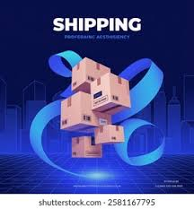

Simplifying Global Procurement & International Sourcing

Our import services help businesses source quality products from international suppliers with complete transparency and reliability. We manage the entire import process, ensuring smooth procurement, documentation, customs clearance, and delivery.
Through our extensive global supplier network, we identify trusted manufacturers and exporters that meet quality standards and business requirements. This allows our clients to reduce sourcing risks and focus on growing their operations.
From supplier verification to freight management and customs compliance, our experienced team handles every stage of the process to ensure your goods arrive safely, efficiently, and on time.
Finding verified and trusted suppliers worldwide.
Fast and hassle-free customs documentation support.
Efficient sea, air, and land transportation services.